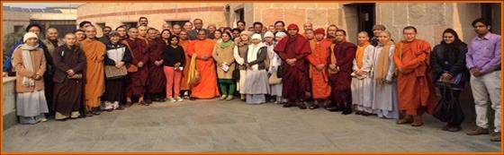
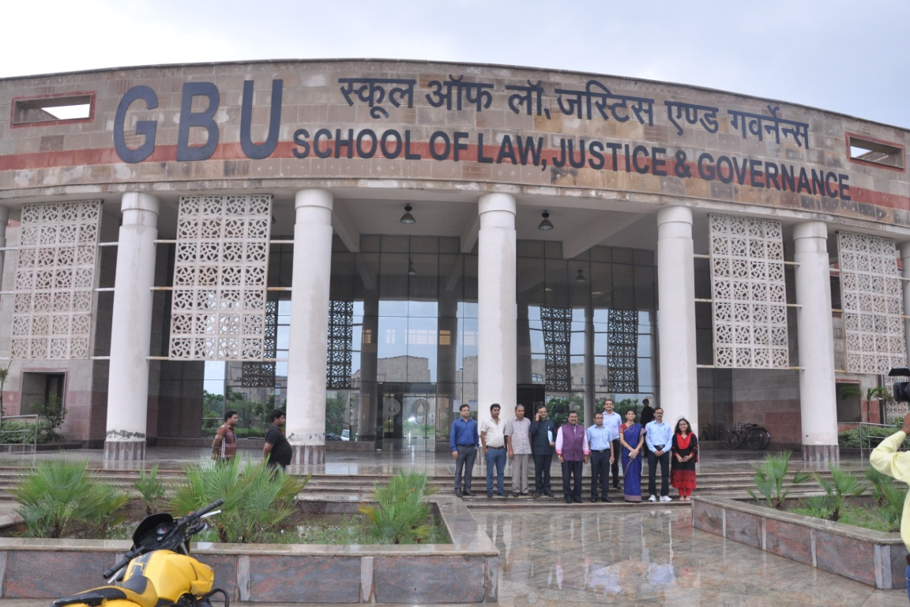

About the School of Learning¶
In order to promote value-based education, research and training, the University has established eight schools of studies, which are:
- School of Management
- School of Information and Communication Technology (ICT)
- School of Biotechnology
- School of Engineering
- School of Vocational Studies & Applied sciences
- School of Humanities & Social Sciences
- School of Buddhist Studies & Civilization
- School of Law, Justice & Governance
Each School of studies in the University combines a multilateral confluence of academic training, research, innovation and creativity. The Schools are embodiments of the University?s ever-growing quest for excellence in higher education and research. All the Schools are in synchrony with the essence of our predominant Buddhist Ethics and Practices in the modern context. All the Schools encompass modern fields of studies, high-end technological exposure and a meaningful dissemination of knowledge coupled with practicing wisdom. The uniqueness of the University is acknowledged through the format, content and pedagogy of its programmes and their relevance to the society.
The Schools of Studies were established with the objectives to disseminate knowledge by providing instructional and research facilities in such branches of learning as it may deem fit; to make special provisions for integrated courses in Management, Engineering, Biotechnology and ICT in its educational programmes; to take appropriate measures for promoting innovations in teaching-learning process and inter-disciplinary studies and research; to educate and train manpower for the development of the country and to establish linkages with industries for the promotion of science and technology; and to pay special attention to the improvement of the social and economic conditions and welfare of the people, their intellectual, academic and cultural development.

The academic programmes offered by the University have been recognized by the UGC and by various regulatory bodies /Statutory Councils, whichever are applicable in individual cases viz.
- Recognized by the University Grants Commission of India (UGC); vide F.9-18/2009 (CRP-I) dated 13 May 2009 under section 2(f) of UGC Act 1956.
- Association of Indian Universities Membership; vide Meet/84-AM/2009/289139-73.
- Approved by the Bar Council of India: The School of Law, Justice & Governance (SoLJ&G) offers a five years Integrated BA, LLB programme; vide BCI:D:2074/2014 (LE/Afflin) on 03.12.2014.
- Approved by Rehabilitation Council of India (RCI): The Department of Psychology & Mental Health, School of Humanities & Social Sciences offers M. Phil. (Clinical Psychology), 2 years Programme; vide 17-785/M. Phil. (Cl. Psy.)/14/RCI dated 07 July 2014 for session 2014-15. However for the current academic session it is under process.
- Approved by the Council of Architecture, India: The Department of Architect & Planning, School of Engineering offers 5 years Integrated Dual Degree Programme (B. Arch. + M. Arch./MBA) in Architect and Planning Programme; vide CA/5/Academic-UP35 dated 03 September 2012.
- ISO 9001: 2008 Certification of the University accredited jointly by Joint Accreditation System of Australia & New Zealand (JAS-ANZ); vide 1015QBC26 issued on 21 February 2015.
2.1 SCHOOL OF MANAGEMENT¶
The School of Management (SOM) has been marching on with an integrated focus on exploring and creating new avenues for all passionate aspirants by strategic collaborations with institutions & Individuals, and the enterprises of national and international repute. The School has already shown commitment to internalize the quality standards indicated by the credible bodies. The School has leveraged the flexibility in the curriculum design to mold it according to the fast changing regional and global context. It has been offering some unique courses and programmes, which has been quite popular among students and industry. The five years programme makes possible to cater pool of electives in the areas of Finance, Marketing etc along with multiple summer training opportunities with foreign language during the programme.?The School has state of the art classrooms equipped with computing and multimedia facilities and supported by an extensive library of books, journals, films & databases. The curriculum of all its academic activities has international and cross cultural focus. The School offers specialization in HRM, Marketing, Finance, Operations, Information Technology and Strategy etc. GBU SOM promotes diversity in MBA class by inculcating students from different other Schools of the University, thus encouraging multi-disciplinary learning.
Laboratories:
Computer Labs, Professional Development Lab & Communication Lab
2.2 SCHOOL OF INFORMATION & COMMUNICATION TECHNOLOGY¶
The School of Information and Communication Technology (ICT) has been progressing towards excellence in the field of technical education and research. The School aims to produce competent professionals having strong sense of social responsibilities and become a hub of research and development activities of national and international recognition. The academic programmes, are designed in line with the best Universities around the world, and combine the best practices of pedagogy and class room teaching, complemented by practical training and experiential learning.
Laboratories:
Computer Lab-1, Computer Lab-2 Computer Lab-3 (Windows Operating Systems), Basic Electronics Laboratory, Electronic Circuits Lab, Logic Design Lab, Artificial Intelligence & Robotics Lab, Wireless Technologies Lab, Optical Communication Lab, Analog Communication Lab, VLSI Design Lab, DSP Lab, Microprocessor and interfacing Lab, Microwave & Antenna Lab, Electronics Workshop, Computer Networking Lab, Expert System Lab, Multimedia Technology Lab, Parallel Processing Lab, Advance Digital Communication Lab, Research and Projects Lab, Open Source Software Lab, Embedded System, Image Processing Lab and Computer Vision Lab.
2.3 SCHOOL OF BIOTECHNOLOGY¶
Biotechnology is largely considered as the applied science of the 21st century. Biotechnology sector is one of the fastest growing knowledge-based sectors in India. With numerous comparative advantages in terms of research and development (R&D) facilities, pool of human capital and cost advantage, the biotechnology industry in India has immense potential to emerge as a global key player. The main objective of the School is to improve the education of present and potential workforce in Biotechnology and to bring innovative products for the social good of the globe. The vision of the School is to achieve multi-layer excellence at regional/national and global level in the field of new solutions and manpower development. The School is dedicated to provide quality service through teamwork, partnerships and developing research spirit for the professional strength of community and individual. The faculty members of the School can clearly be distinguished in terms of proven academic engagement, diverse backgrounds, sponsored research (funded by DBT, DST, ICMR, CSIR, etc.) and its impact. The School is an active centre of basic and applied research. The School of Biotechnology has organized a number of Seminars, Conferences, Workshops and Awareness Programmes through the regular lectures by the Expert Faculty and the eminent Guest Lecturers.
Laboratories:
Advance Plant and Animal Tissue Culture Lab, Molecular Biology Lab, Microbiology Lab, Bioprocess and Fermentation Lab, Genomics and Proteomics Lab, Environmental Biotechnology Lab, Advanced Central Instrumentation facility and Bioinformatics Lab for post graduate and doctoral students.
2.4 SCHOOL OF ENGINEERING¶
The School of Engineering has earned recognition for its commitment to excellence from its inception. School of Engineering has become an example of the best in class faculty members, students, competency and discipline. The School has upheld commitment to the liberal skills and aptitudes in all their breadth and depth. The School of Engineering encourages students to expand their talents and skills not only in technical education but also in career enhancement and personality building too. The School also offers numerous leadership opportunities with various technical and professional augmentation establishments viz. the SAE-GBU Collegiate club, GBU-IEEE Student Chapter. A strong technical core forms the foundation for a wealth of integrated master’s degree programs offered through SOE. The School is enriched by Civil Engineering, Electrical Engineering, Mechanical Engineering and Architecture & Regional Planning departments.
- Laboratories:
- Civil Engineering & Architecture: Engineering Graphics Lab, Material Testing Lab, Fluid Mechanics Lab, Surveying Lab I&II, Environmental Engineering Lab, Advance Environmental Engineering Lab, Concrete Lab, Soil Mechanics Lab, Transportation Lab, CAD lab, Remote sensing and GIS lab.
- Electrical Engineering: Electrical Technology Lab, Electrical Machine Lab, MATLAB Programming Lab, Power Systems lab, Switch Gear and Protection Lab, Measurement and Instrumentation Lab, Network Theory Lab, Power Electronics & Drives Lab, Control System Lab, Bio-Medical and Virtual Instrumentation Lab, digital and non linear control Lab. Upcoming Labs: Advance Power Electronics and Drive Lab, Advance Instrumentation and Control Lab.
- Mechanical Engineering: Engineering Workshop, Fluid Mechanics, Fluids Machines, Automobile lab, Machine Dynamics Lab. Manufacturing Technology Lab, Air-conditioning & Refrigeration Lab, Vibration Lab. Upcoming Labs: Meteorology and Instrumentation Lab, Advance Manufacturing Lab-I &II, Advance Design Lab-I &II, Computational Fluid Dynamics Lab, Heat and Mass transfer Lab, Advance thermal Engineering Lab
2.5 SCHOOL OF VOCATIONAL STUDIES & APPLIED SCIENCES¶
The School of Vocational Studies & Applied Sciences (SoVSAS) comprises of primary disciplines of Chemistry, Mathematics and Physics along with two inter disciplinary subjects, Environmental Science, and Food Processing & Technology. All academic programmes of the School lay emphasize on the integration of the existing theoretical knowledge with practical applications. The School, through its academic and research staff, possesses a huge depth and breadth of scientific & technological knowledge. The integrated approach of the School prepares a strong foundation for the future scientists capable of making new discoveries. Drawing together individual expertise and diverse ideas from a variety of fields we enthuse scholars to go for innovative research. The School is successfully running postgraduate and doctoral programmes since 2011. These academic programmes support specialized interdisciplinary fields of teaching, research and industry engagement in polymer chemistry, green chemistry, pharmaceutical chemistry, environmental science, food technology, Photonics & optoelectronics, semi conductor- optoelectronics devices, plasmonics thin films, nanotechnology, computational fluid dynamics & Applied Mathematics. Apart from these courses, the School is all set to offer a wide range of vocational courses of short duration to increase opportunities and human expertise in varied fields of the professional world. School of Vocational Studies and Applied Sciences has been very active in conducting workshops, and organizing national and international conferences and seminars.
Laboratories:
Apart from basic laboratories for undergraduate engineering and science students, the School has advanced labs in all the disciplines for postgraduate / doctoral students.
2.6 SCHOOL OF HUMANITIES & SOCIAL SCIENCES¶
The School of Humanities and Social Sciences is interdisciplinary in approach. It plays the pivotal role of exposing the students to an environment that is conducive to develop understanding of contemporary social issues through inter-relationship of science, technology and management. The School has a unique and distinctive role of hosting creative educational programmes that focus on creating holistic understanding of complexities of life in social context with emphasis on Indian cultural values and Buddhist ethics. The School is committed to provide an interdisciplinary and integrative pedagogical interface to learners so as to nurture them into competent human beings. The academic programmes, designed in line with the best Universities around the world, combine the best practices of pedagogy and class room teaching, complemented by practical training and experiential learning. The School encourages research and focuses on providing its students with an atmosphere for rigorous academic and intellectual development. For the fulfillment of its teaching and research goals, the School has competent faculty members who keep pace with the current developments in their fields of specialization.
- Laboratories:
- Clinical Psychology Laboratory & OPD Services: Mental Health Clinic, Child and Adolescent Clinic, Neuro-psychological Clinic, Mental Retardation and Development Pathology Clinic, De-addiction Clinic and Psychosexual Clinic, on specific week-days.
- Social Work Lab: Social Work Practice Learning Laboratory
2.7 SCHOOL OF BUDDHIST STUDIES & CIVILIZATION¶
The School of Buddhist Studies & Civilization has been established with a vision to produce the erudite scholars and distinguished researchers in the field of Buddhist Studies, in order to develop and cater their knowledge to serve the humanity. The School adopts interdisciplinary and multidimensional approaches with the help of other sciences and social sciences like Archaeology, History, and Philosophy etc. for producing scientific researches. The School is well supported by talented and innovative faculty members, who are striving hard to establish the School as an institution of repute with their pioneer researches, conference participations, and academic endeavours. Their commitment for the School is to encourage scientific inquiry and inquisitiveness among the students as well as academicians. The School offers various academic programmes at Graduate, Post-Graduate and Doctoral level including BA, MA, M. Phil, and Ph. D. From the year (2014) the School has started five year integrated course of B. A. (Hons.) - MA in Buddhist Studies and Civilization programme for the first time in India. These flagship programmes are aimed to train the students to inculcate their expertise and vision for socio-economic, religious, and political development of the World. Our vision is to establish the School of Buddhist Studies and Civilization, Gautam Buddha University as a major research Centre of the world. Keeping pace with the disciplinary advances, the programme would address learning about ethical, psychological, historical, philosophical, economic, transnational, trans-cultural, and linguistic expertise at individual, social, national, and international level. It would facilitate acquisition of specialized knowledge in Buddhist History, Philosophy, and Literature existing in Pali, Sanskrit, Chinese, Burmese, Sinhalese and Tibetan languages and their literature.
The course shall allow students in specialized domains of Buddhist Studies, along with quest for personal growth and citizenship. The objective of the programme is to create strong research oriented foundation in consonance with the recent advances in the field of Buddhist Studies to enable young/budding researchers/scholars to adopt an ethical approach to the programme that combines conceptual and representative practices in both quantitative and qualitative tradition. The programme would provide an opportunity to extend the knowledge and practices with a view to promote healthy interface between academics and society. With a very rich library, a grand meditation centre, a serene campus, the School promises a very productive academic engagement and practice of Buddhist techniques of Vipassana meditation under qualified supervision. In addition to the above, the School provides an ideal forum for cross-cultural and international dialogues, with regular sessions with scholars, conventions, symposia, seminars, conferences, lecture series, etc. It is open to academic collaborations, joint research programmes and faculty & student exchange programmes with academic institutions of repute dedicated to Buddhist Studies. The School has a MoUs with Dhammachai International Research Institute (DIRI), based in New Zealand in June 2013 and MIMC, Leh, Ladakh in 2015.
2.8 SCHOOL OF LAW, JUSTICE & GOVERNANCE¶
Gautam Buddha University-which has been legislatively conceived as ?a centre of excellence?-has started its ambitious multidisciplinary academic programme with the establishment of its School of Law, Justice & Governance in 2011. The School envisions to foster advancement of learning, teaching and research in the fields of law, justice and governance. The main academic programme of the School, the five-year integrated BA LLB, has been running since July 2012. With enrollment of students in the same programme in the academic session 2015-16, the School is treading ahead at fairly good pace. The ongoing programme of the School attempts to strike a right balance between the compulsory subjects prescribed by the Bar Council of India and subjects underscoring the interface between Law, Justice and Governance.
The School aims to blend the theoretical knowledge with practical learning and development of skills and professional attitude through clinical legal education. Keeping this object in mind, the students are guided to participate in moot-court practice, debate, essay writing and project works. With this, the School also aims to provide an opportunity to the students to explore the undiscovered nuances of legal profession and to engage in setting new standards in legal education.
Important
STUDENTS SUPPORT AND PROGRESSION
Each School has an efficient and competent system for student support and mentoring to provide academic, career and emotional counseling to the students. Students are supported through mentoring in academic studies, sports and cultural activities. They are guided for the development of their soft-skills and communication skills. They are counseled to develop professional competitiveness as well as develop ethics, human values, sense of social responsibility and environmental consciousness. Students are encouraged to participate in activities for social and community services. GBU also has a very strong program for counseling, soft skills development, career-path-identification of the students.
The University has facilities for the differently-abled students like ramps and other basic facilities in all Schools/ Hostels and other premises. The University is very sensitive to the issues of gender equality. The University has ?Gender Sensitivity Policy?. Students are encouraged to maintain gender discrimination free environment. Street plays related to this issue are enacted in the campus every year by student cultural groups. Also talks are organized for encouraging students to make campus a safe place for every student irrespective of gender and culture. The University also organizes various sessions to promote women empowerment. The University employs a no tolerance policy for issues related to sexual harassment.